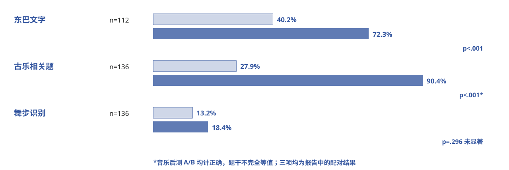

（五）结果解释与建议学习结果：文字、音乐与舞步
现有研究摘要中的配对题显示：文字和音乐正确率提高；舞步题数值略升但差异未显著。三类题的题干与判定方式不同，不宜直接横向排名。

证据与状态 文字 n=112，音乐/舞步 n=136；音乐后测 A/B 均计正确；舞步 p=.296。无原始表可独立复算。
现有研究摘要中的配对题显示：文字和音乐正确率提高；舞步题数值略升但差异未显著。三类题的题干与判定方式不同，不宜直接横向排名。

证据与状态 文字 n=112，音乐/舞步 n=136；音乐后测 A/B 均计正确；舞步 p=.296。无原始表可独立复算。